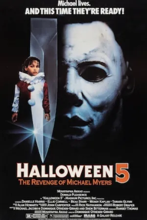
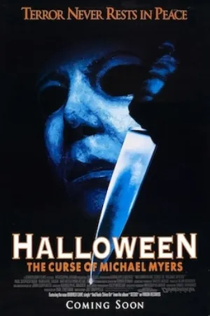
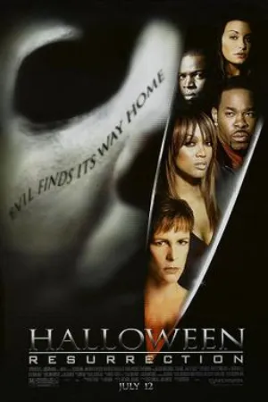
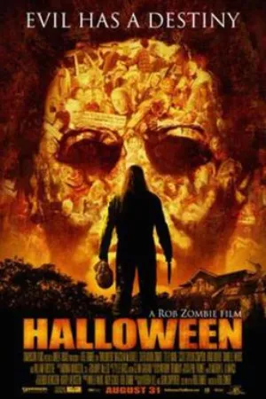
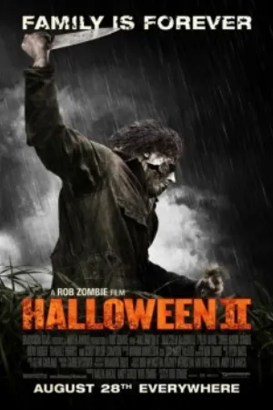

Watch order · 13 films
Halloween movies in order.
The Halloween series has several timelines that each start from the 1978 original. This list goes timeline by timeline, so every film follows the one it continues.
Kuvacult watchlist key
@KVHWN
Enter this code in Kuvacult to create this watchlist, already in order.
1Copy the key above.
2Open Kuvacult and go to Watchlists.
3Choose “Add from key” and paste it.
4The list appears in order, ready to share with friends.
Halloween in order
 1
1Halloween
 2
2Halloween II
 3
3Halloween III: Season of the Witch
 4
4Halloween 4: The Return of Michael Myers

5Halloween 5: The Revenge of Michael Myers

6Halloween: The Curse of Michael Myers
- 7
Halloween H20: 20 Years Later

8Halloween: Resurrection

9Halloween

10Halloween II
- 11
Halloween
- 12
Halloween Kills
- 13
Halloween Ends
Questions
Why are there so many Halloween timelines?
Several sequels ignore earlier ones. H20 skips parts 4 to 6, and the 2018 trilogy follows only the 1978 original.
Do I need to watch Halloween III?
No. Season of the Witch is a standalone story without Michael Myers.
Which Halloween timeline should I watch?
For the shortest route, watch the 1978 original and then the 2018 trilogy.
More chronological orders


Watch it with your friends.
Kuvacult is a free movie tracker with shared watchlists, a veto game for picking movie night, and séances for watching together.